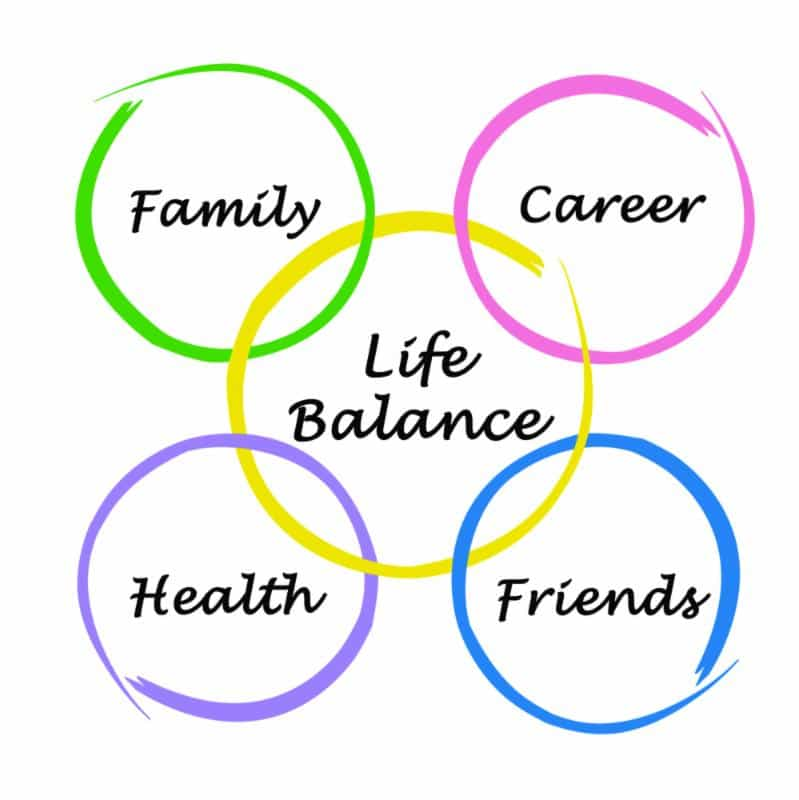

Luke Stranahan is an engineer by trade and an armed patriot by inclination. He writes for Return of Kings as a leisure pursuit and an attempt to do his part to help reverse the slide into moral decrepitude of modern society. Follow him on Twitter.


Let’s contemplate the idea of man’s dependence on society and how that dependence forces him to do, think, and say things that make him a different sort of man than he would prefer to be. Let’s also remember that we are placed on this planet with only one static resource of which we will get no more, and that is time. You are born, you have a finite amount of minutes here, and you will then die.
“Time is the school in which we learn / Time is the fire in which we burn.” -Delmore Schwartz
What to do?
Neomasculinity covers what we should do with ourselves and our time. We have limited time, and in order to maximize it, we need to be as efficient as possible in utilizing it to our benefit. We need to stop wasting time on things that do not benefit us.
Does grinding away at that job benefit you? How about that expensive car you “bought” upon which you make large monthly payments? Or perhaps that organization that you joined years ago and now run in entirety? The house that is a status symbol but takes a lot of upkeep? Spoiled wife and kids? Intruding church family? All these things chip away at your time and energy.
The USA and Western nations work on capitalism. You work a job, you get paid, the government takes a varying amount in taxes, and you keep what is left. The blue pill vision is that you will work as hard as possible for your company and you will be rewarded with promotions and higher paychecks which you can then spend on stuff, as if maximizing money maximizes happiness.
It’s not the size of the stack…..it’s how you use it.
Focusing on your paycheck is the wrong thing to do. You do need a paycheck unless you have money already, but the more important thing to do is focus on what you do with it. You need to “live beneath your means” so you can develop a surplus. Dave Ramsey and Tom Stanley make good points on this.
“Paycheck to paycheck” is when all the money you make each pay period is spent immediately. You will never be able to escape the cycle if you live that way, and this is what people who are old and behind on investing bemoan; they soon will not be able to physically do labor to provide for themselves what their retirements should have been doing long ago, and they lost decades of time to enjoy the fruits of their labors.

Not everyone gets this upon retirement.
Upon what are you spending your money? You should never go into debt unless it’s for something that will appreciate in value, and there are only two routine things that do—education and buying a home, and neither is a sure bet anymore. Expensive car payments are a waste of money, as are the latest fashions, the newest TV, and anything that you have to “finance.”
Also expensive are the monthly memberships and fees. Do you use all that premium cable? Do you go to too expensive of a gym? Do you leave lights on and the heat too hot, or the AC too cold? Your monthly bottom line is affected by all of these.
It’s okay to spend money on hobbies that matter to you. Have a couple things you’re proud of and like to enjoy the good stuff on, but you don’t have to have the best of everything.
Balancing your budget will leave you some free cash, just like a workout and diet regimen allows some days off for pizza.
Once you start getting a monthly surplus, invest that stuff in something. Land, stocks, bonds, whatever is good at the time. It’s ok to hire a financial advisor. Those investments will generate a return, which you can then invest into something else, and maybe treat yourself to something nice once in a while that you didn’t have to borrow money for. Never underestimate the power of compound interest.
What do we do when we’re not working or asleep or doing something of a solitary, self-improvement nature? We socialize by joining various groups that have an objective we enjoy. If you like running, you can join a running group. If you like being part of theatrical productions, there’s usually a community theater nearby.
There’s a danger. Volunteer organizations need donations of time, and they need a lot of it from their leaders. The higher-ups recruit from the new folks with promises of appreciation and esteem and suck you right in to donating time. Now, you’re not running with the group, you’re organizing the 5k run; you’re not just an actor in the play, you’re now the set designer and have to recruit people to build it.

Remember your purpose when you join an organization; are you there for them, or are you there for you? I join groups to make friends, meet girls, and have fun doing whatever it is the group does. I don’t join them to be one of their leaders and spend my free time running their organization, nor do I seek to make it mine. The best position is to be a little gear in a big machine.
The same goes for friendships, acquaintances, and, to a lesser extent, family. Are you always doing something for a certain friend? Does he always ask favors and never has anything of value to contribute on his own back to you? Friendships should be beneficial to both parties. With siblings, you have to walk the line between being there, and helping them learn to handle things on their own. With parents, you need to be there for them as they were for you.
Belong to a couple groups that you go to occasionally, have some friends that are just as successful as you, and have a dog. That’s all the commitment you’ll need.
Most of your time should be spent on improving yourself. Ask yourself “What does this, right now, do for me?” The answer should be that this article is provoking some good thinking about your being a better man, but that’s only for the next couple minutes until after you finish the article and peruse the comments section.
What then? Work is good, it makes you money. A man needs to eat, sleep, stay clean, travel about his daily efforts, and maintain physical fitness. Your hobbies should benefit you. Mine revolve around firearms, cars, boats, and homesteading, but I used to be a hardcore videogamer. The difference is that my current hobbies are me doing something useful.

Hovering on social media is a timesink. Sure, have a Facebook account, but check it, check your mail, read ROK, check the news, then GET OFF and go do something. Television is as bad. I’m not being a Puritan; it’s okay to have a show you like, but people who binge watch Netflix instead of doing something are wasting their lives. TV is a filler, not the main event. Reading is better, as it at least engages the mind when you do it, but the time spent varies in value based on what you’re reading.
This article also was derived from a comment I wrote a few days ago, which I’ll repeat here:
1. Improve yourself every day, in every way you can. This will help you live a healthy, happy, long life full of benefits including beautiful women.
2. Realize that all women are broken. Enjoy their company for what it is, but do not marry or support a bad one. Equality means equality, which means you can get the milk without buying, or even renting, the cow simply because that cow must be milked by someone, and you’re a good choice due to #1.
3. If you find the unicorn, marry her or LTR her while maintaining frame and be happy and have kids. If you don’t find her, continue with #2 until you no longer feel the need, and continue with #1 and be happy until the day you die.

“Save me, Roosh!”
Ultimately, you are the source of your own happiness, not women. A woman should be a part of a good life, not the point of it. I’m at a point in my life where the scales are tipping, and there are more available women that I do not want, then ones that I do. It’d be a shame to not have kids to raise right, and a man does get lonely at times, but it would be more of a shame to wife up a broken bitch and wreck what I have going now.
True independence from women is not swearing them off, but rather, realizing that you’re good either way, with or without them, so she needs to meet your standards, not the other way around as presented by the narrative.
An independent man may not always be a happy man, but he has a better chance of being so than his brother who has many more burdens than he does. Men work, it’s what we do, but a man should pick who benefits from that work very carefully, and that list should always start, and often end, with himself.
Read More: 20 Things You Can Do Instead Of Playing Video Games